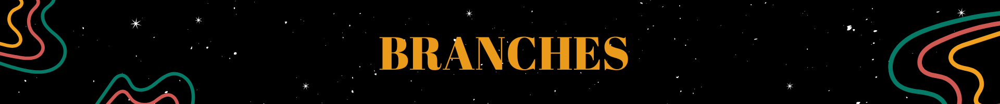
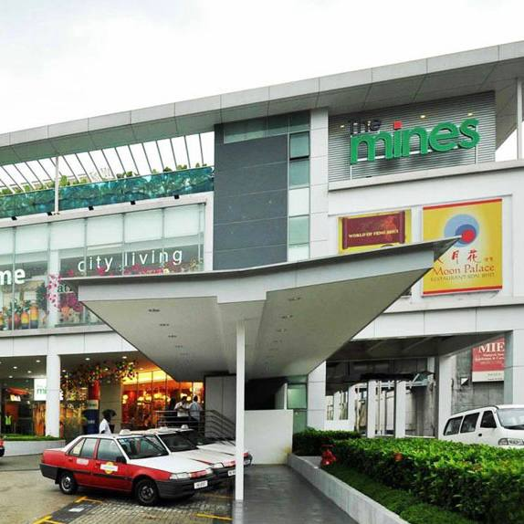
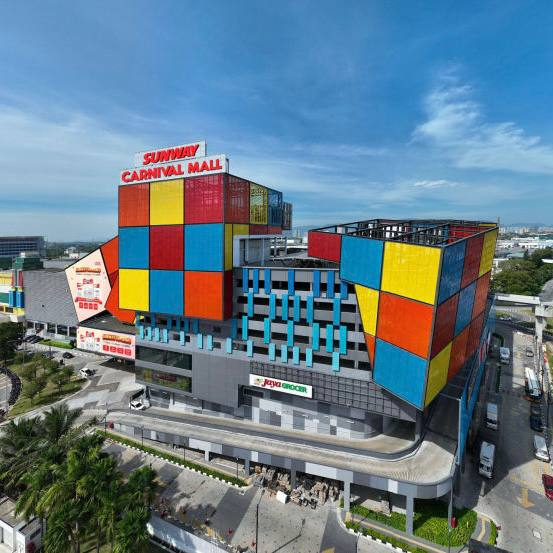

Located in the heart of the city, our Kuala Lumpur branch is easily accessible and offers a wide selection of sustainable fashion. Visit us to discover unique finds at affordable prices.
Address: Floor 6, Suria KLCC, Kuala Lumpur City Centre, Kuala Lumpur, Malaysia
Contact: 04 8264 6630

Our Selangor branch is nestled in the suburbs, offering a cozy atmosphere and great deals on preloved items. Come visit for a personalized thrifting experience.
Address: F3 12, Mines 2, South KL, Pusat Perdagangan Mines, Jalan Mines 2, Mines Wellness City, 43399 Seri Kembangan, Selangor
Contact: 04 5609 6243

Our branch in Pulau Pinang offers an eclectic mix of vintage and modern thrifted items. It's the perfect spot to find something unique while supporting sustainability.
Address: Sunway Carnival Mall 3068, Jalan Todak Pusat Bandar Seberang Jaya, Seberang Jaya, 13700 Perai, Pulau Pinang
Contact: 04 9889 2341